Tokyo / Kyoto Summer, 2025
- No.
- 07
- Year
- 2025
- Discipline
- Photography
- Type
- Photo essay
- Place
- Tokyo & Kyoto, Japan

Exploring Tokyo and Kyoto in the summer of 2025, I discovered a world where vibrant personalities meet breathtaking landscapes.
This collection captures the essence of Japan’s culture, from its playful kawaii charm to its fashion-forward streets, and from serene nature to dynamic city life, celebrating the diversity that makes this country so unforgettable.
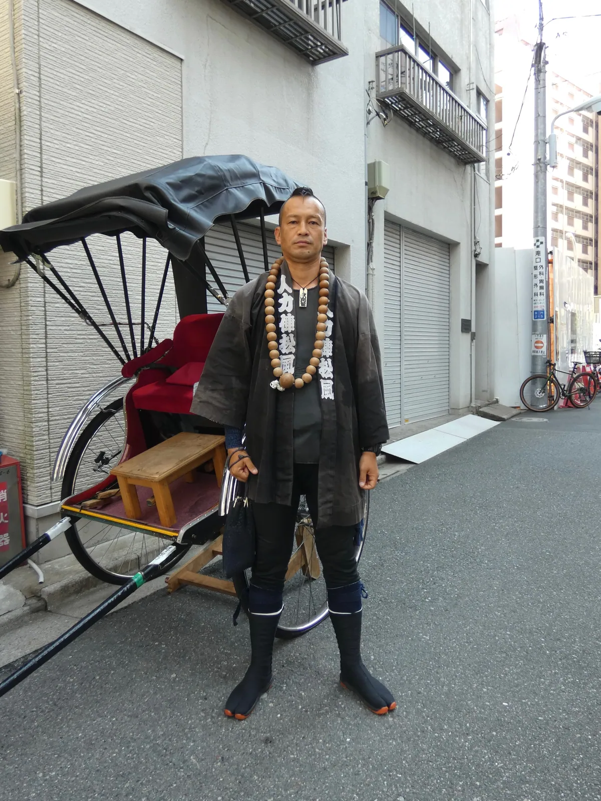
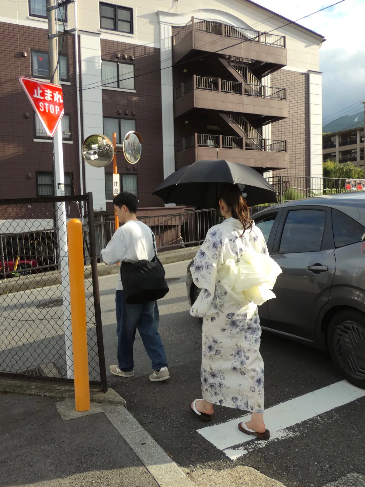
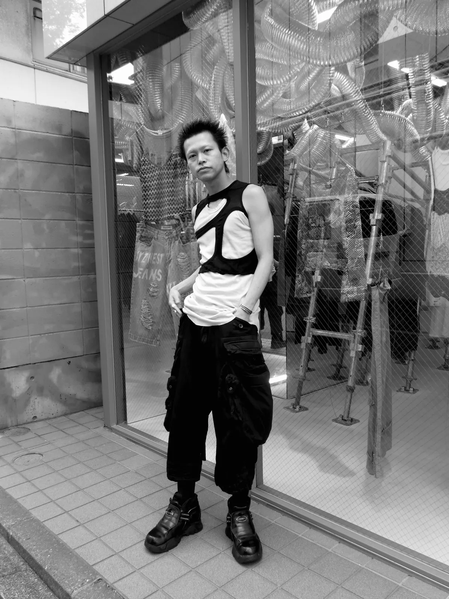
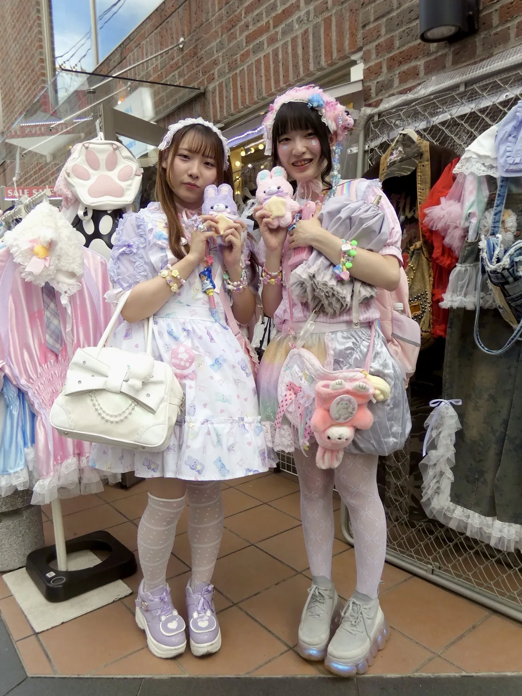
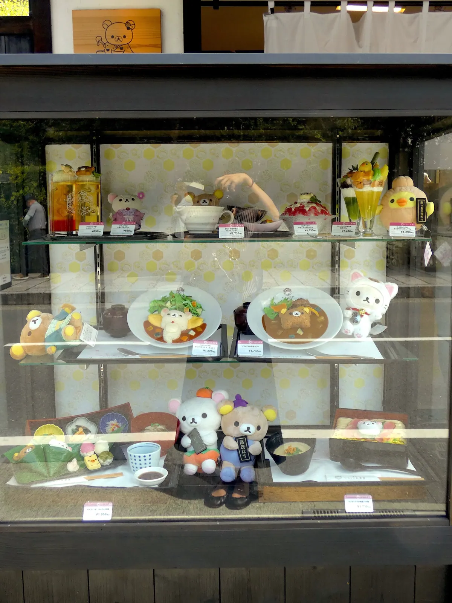
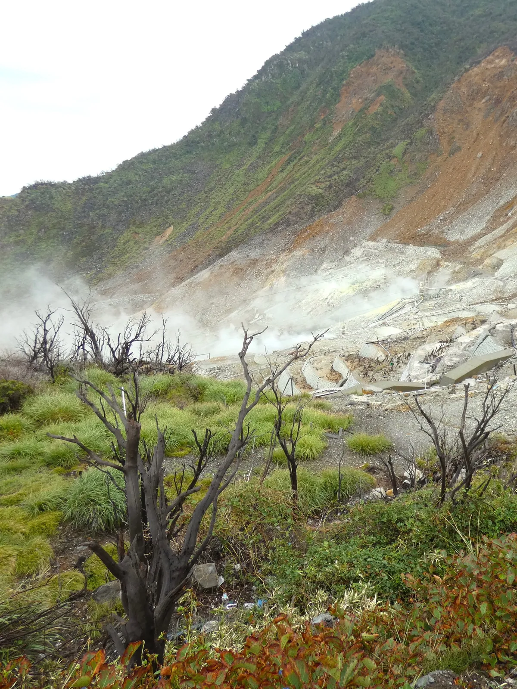
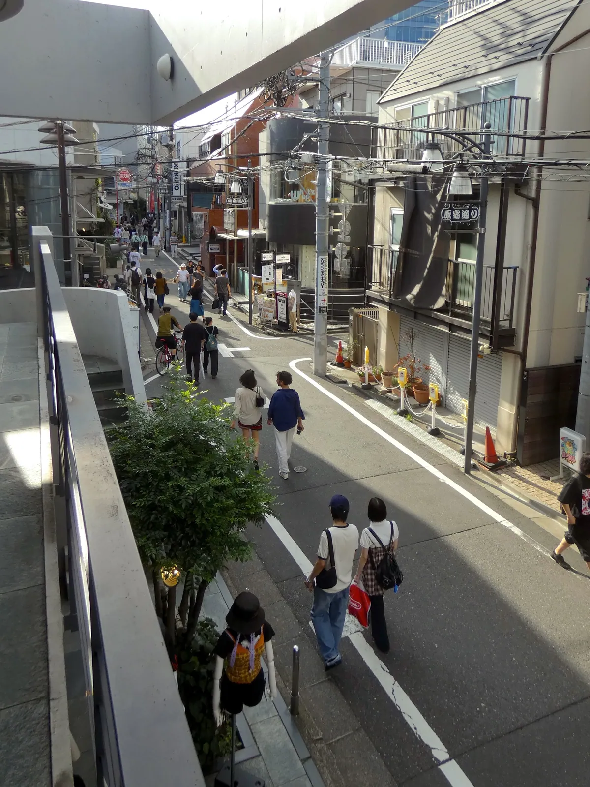
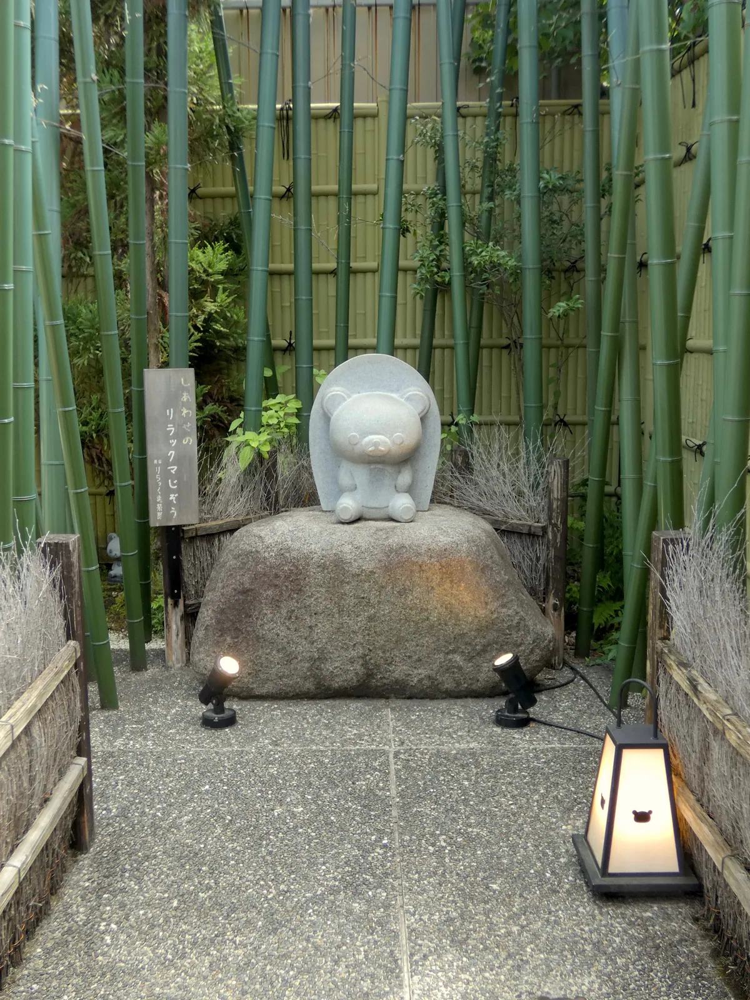
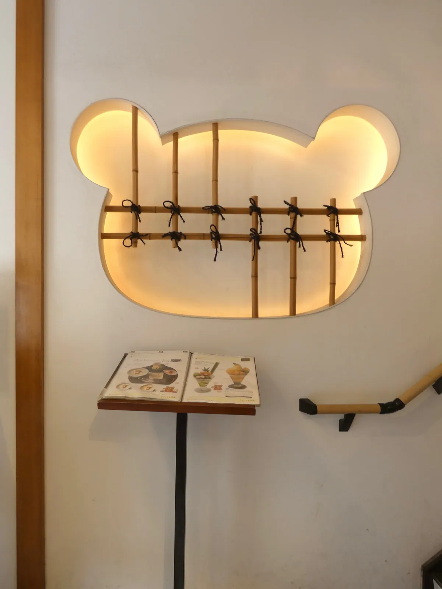
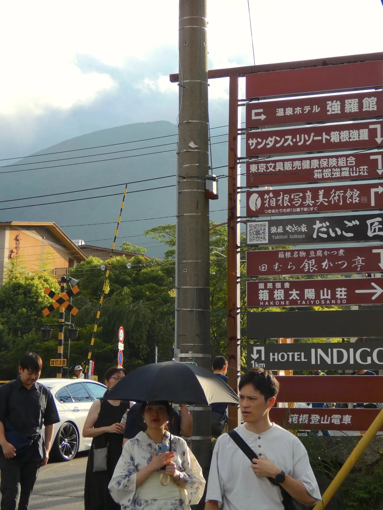
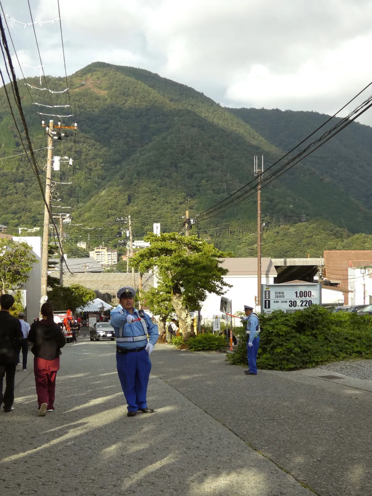